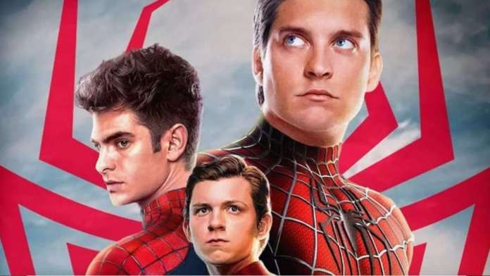

Scheda Tecnica
Durata:120;
Genere:Azione,Fantascienza;
Anno di uscita :16/12/2021;
Regista: Jon Watts
Cast:Tom Holland, Zendaya, Benedict Cumberbatch, Angourie Rice, Marisa Tomei, Jamie Foxx, J.K. Simmons, Alfred Molina, Martin Starr, jacob Batalon, J.B. Smoove, Tony Revolori, Hannibal Buress
Trama: Spider-Man No Way Home, il film diretto da Jon Watts, vede, per la prima volta nella storia cinematografica di Spider-Man, la vera identità del nostro amichevole supereroe di quartiere rivelata al mondo intero. La vita del 17enne Peter Parker (Tom Holland), così come quella delle persone a cui tiene, finisce al centro dell'attenzione dell'opinione pubblica. Incapace di restare a guardare passivamente infrangersi i sogni dei suoi amici, Peter decide di rivolgersi al Dottor Strange (Benedict Cumberbatch), chiedendogli di ripristinare il suo segreto, facendo dimenticare a tutti che Peter Parker è Spider-Man. Strange non può rimanere indifferente alla supplica di Peter e decide di aiutarlo. Purtroppo, l'incantesimo apre uno squarcio nel loro mondo, liberando i più potenti nemici mai affrontati da uno Spider-Man in qualsiasi universo. Ora Peter dovrà superare la sua più grande sfida, che non solo cambierà per sempre il suo futuro, ma anche quello del Multiverso